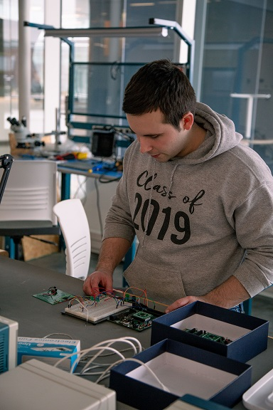

My passion for engineering began during my high school years in Douglas, MA, where I excelled in all my STEM classes. However it wasn't one of my calculus classes that ultimately led me to choose engineering as a field of study. It was in my high school robotics class when I discovered my passion for designing and coding robots. This passion eventually led me to pursue a degree in electrical engineering at the University of Rhode Island in hopes that I would be able to get a career in robotics later on. At URI, I had the opportunity to study with some of the best engineering professors, and I quickly realized that engineering can be a challenging, but highly rewarding field. In my engineering classes, I have been able to develop my complex problem-solving skills, as well as both my creative and logical thinking styles. This has allowed me to approach engineering problems with a unique perspective, which has led to some truly innovative solutions in my designs. Despite the demands of my engineering coursework, I enjoy participating in extracurricular activities, including intramural soccer and volleyball, working out everyday and starting my own businesses. These activities have allowed me to maintain a healthy balance between work, school and my personal interests. Overall, I am grateful for the opportunities that I have had in my educational and professional career thus far. I am excited to continue exploring the field of electrical engineering, and I am eager to see what the future holds in terms of technological innovation and advancement in my personal career.
